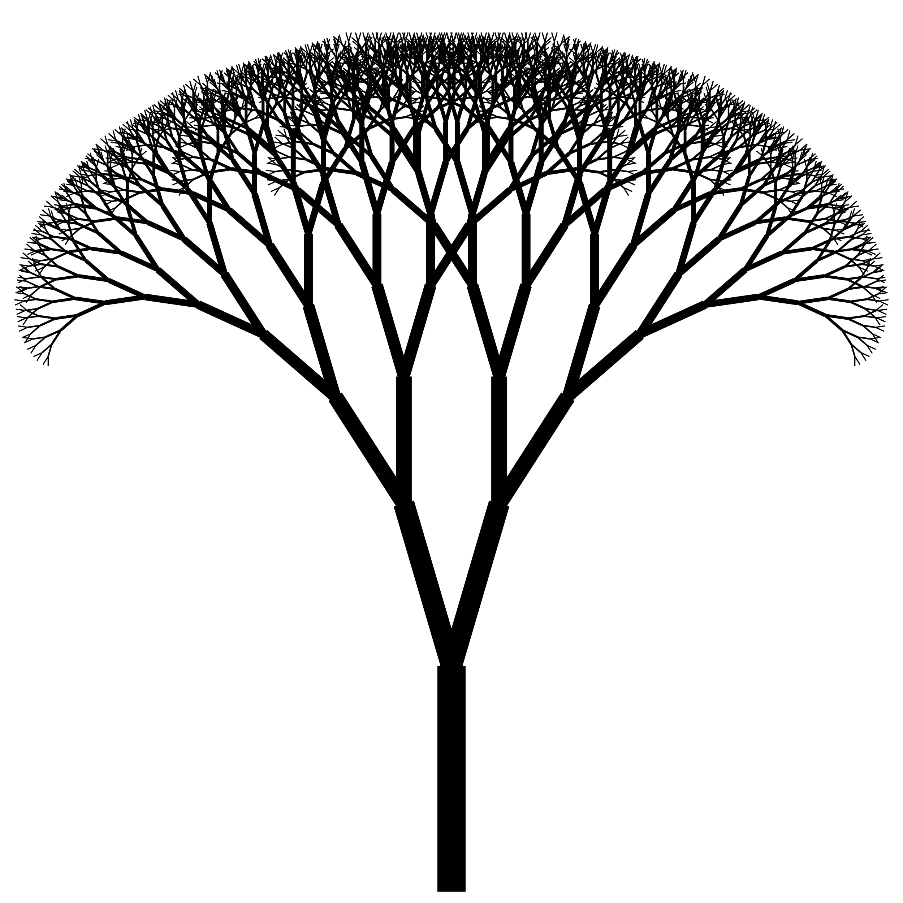

Projects

Fractal Tree
- Implement Fractal Tree Panel using a custom stack for iterative tree drawing
- Loops through stack elements to draw and calculate branch states( start point, length, angle, depth)
- Allows for tree appearance customization(branching angle, length reduction ratio, iteration number)
- Explores additional features: colors variation, branch thickness, leaves addition.
Captions Generator
- Built and developed a captions generator that takes a video, transcribes it and then applies captions on it using Next.js and React
- Captions are adjustable and have numerous customizable features such as colors, margins, etc.
- Result of newly captioned video is able to be downloaded and shared

Email Manager Using A Double-Linked List
- Developed a double-linked list with the purpose of focusing on contact management with multiple email addresses
- Analyzes the time complexity of each method in the context of the double-linked list
- Developed JUnit5 test cases for the DoubleLinkedListTest class